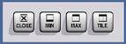

Getting Started
>
Instrument Tour
>
Front Panel Tour
>
Window Control Keys
Window Control Keys
The keys below the numeric key pad arrange windows on the display.

CLOSE – closes the active window, e.g. a configuration dialog
MIN – reduces the active window to an icon
MAX – for future extensions
TILE – for future extensions
Top